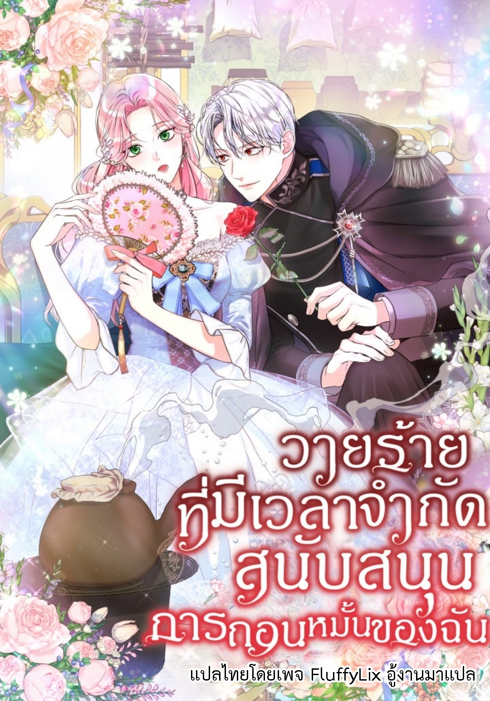

FluffyLix
กลยุทธ์ของซัคคิวบัสในการพิชิตเหล่าตัวเอกชาย (How to Conquer a Reverse Harem as a Succubus)
ฉันติดอยู่กับพระเอกที่เกลียดชังฉัน (I'm trapped with male leads who hate me)
เหยื่อ (BL18+)
(18+)เพื่อนของเพื่อนฉันเขาคือใครกันนะ?

วายร้ายที่มีเวลาจำกัดสนับสนุนการถอนหมั้นของฉัน(The Time-Limited Villain Supports My Breakup)
ภารกิจดูแลคุณพ่อผู้อ่อนแอ (I Simply Cared For My Frail Dad)
นี่นาย ทำไมถึงใหญ่แบบนี้ล่ะ? (How are you so big?)
ภารกิจรวบรวมคืนแรกของเหล่าพระเอก (Collecting the first nights of the male leads)
ฉันแค่อยากสนุกไปกับชีวิตแสนสุขนี้
คำสัญญาที่ฉันไม่ได้ให้ไว้ (The Promise Isn't Mine)
The Possesive Tyrant and His Sleepy Cat ฉันกลายเป็นแมวเหมียวนิทราของทรราช (The Possesive Tyrant and His Sleepy Cat)
ขนมหวานเปื้อนเลือด
คุณบอสของพี่ชายฉันจะล้ำเส้นเกินไปแล้ว
ชายคนนี้มอบให้ได้ทุกสิ่ง (BL)
เครื่องดื่มร้อนรักของคุณฟลินน์ (BL)
MAKE HIM CRY
Campus Secret Girlfriend♡ (BL)
อุทิศแด่เธอผู้เย็นชา (BL)
I Don't Want to Attack You (I Don't Want to Bed You!)
What a Girl Wants (จบแล้ว)z